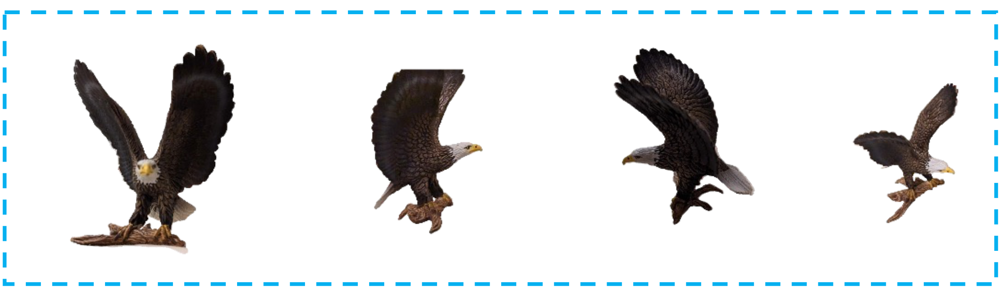
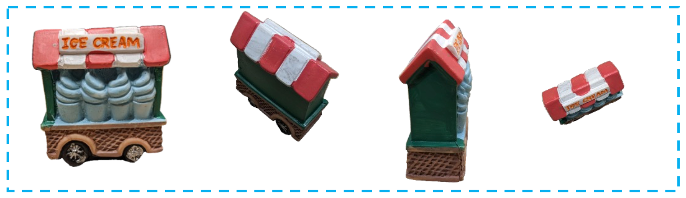
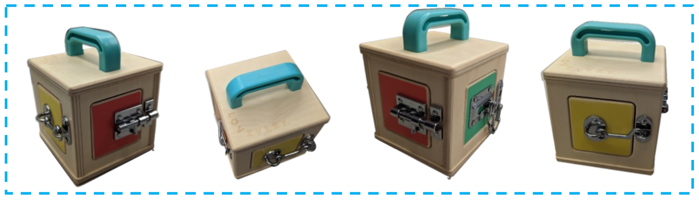
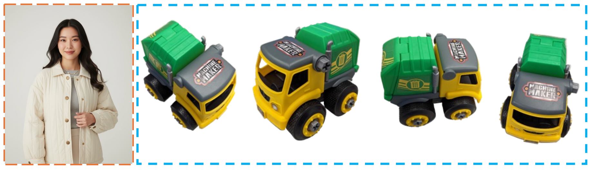
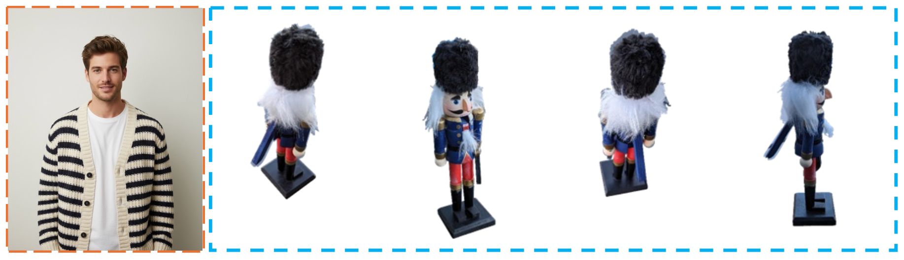
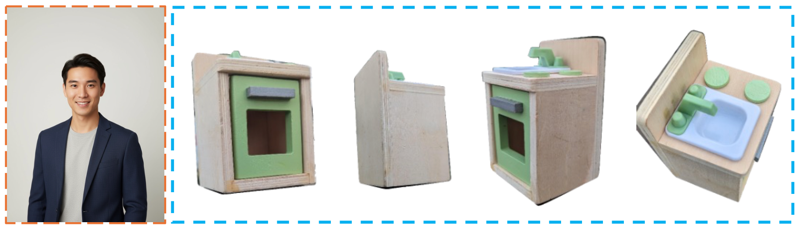
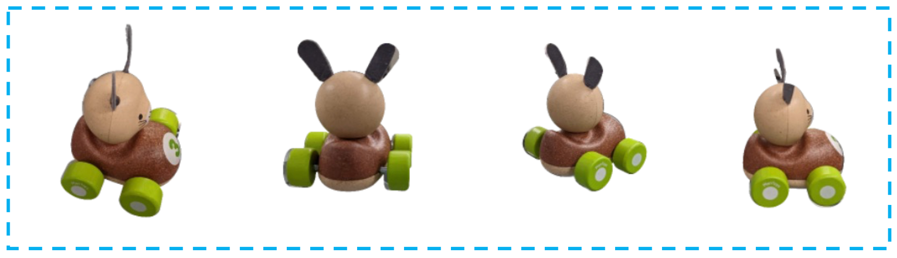
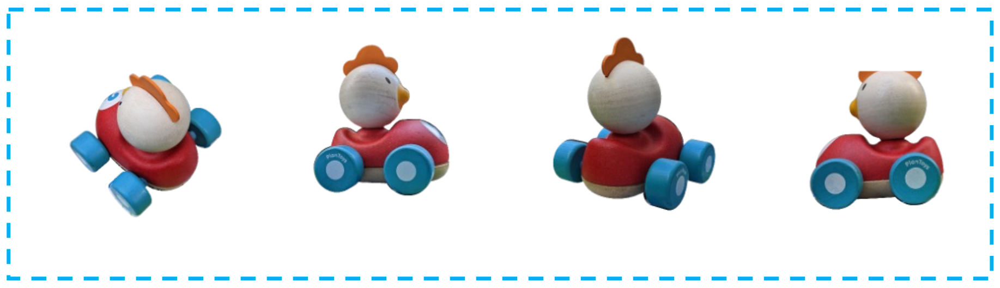
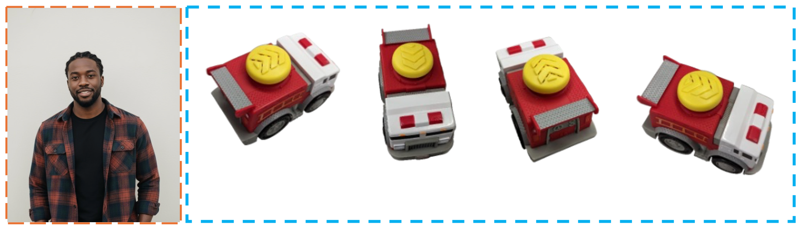
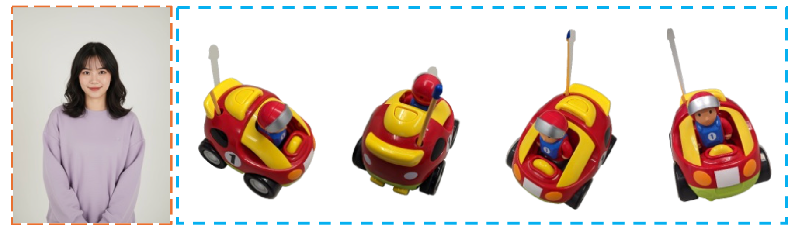

Existing Subject-to-Video Generation (S2V) methods have achieved high-fidelity and subject-consistent video generation, yet remain constrained to single-view subject references. This limitation renders the S2V task reducible to an S2I + I2V pipeline, failing to exploit the full potential of video subject control. In this work, we propose and address the challenging Multi-View S2V (MV-S2V) task, which synthesizes videos from multiple reference views to enforce 3D-level subject consistency. Regarding the scarcity of training data, we first develop a synthetic data curation pipeline to generate highly customized synthetic data, complemented by a small-scale real-world captured dataset to boost the training of MV-S2V. Another key issue lies in the potential confusion between cross-subject and cross-view references in conditional generation. To overcome this, we further introduce Temporally Shifted RoPE (TS-RoPE) to distinguish between different subjects and distinct views of the same subject in reference conditioning. Our framework achieves superior 3D subject consistency w.r.t. multi-view reference images and high-quality visual outputs, establishing a new meaningful direction for subject-driven video generation.
Given multi-view reference images for subjects, our MV-S2V can generate videos with multi-view (3D) subject consistency.










If you find this project useful in your research, please consider citing: